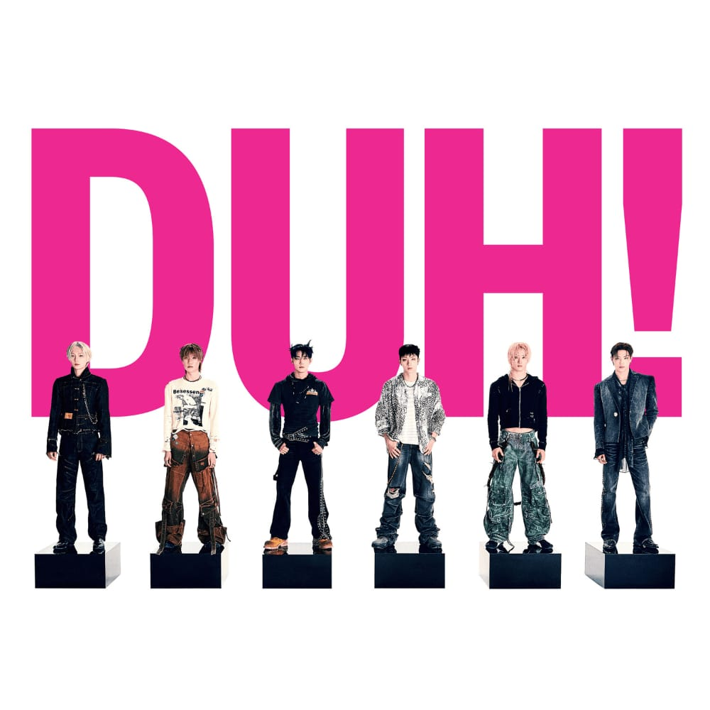
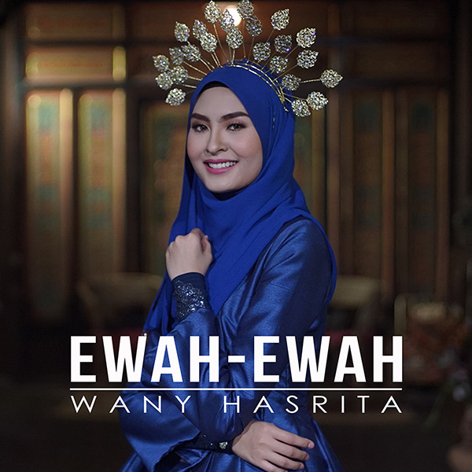
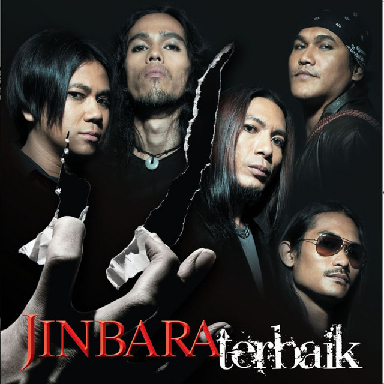
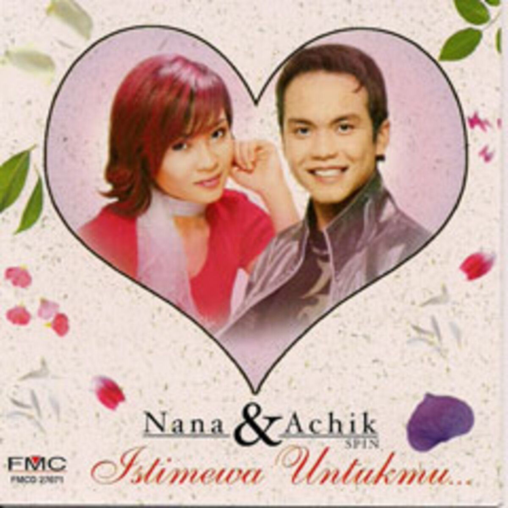

🎨 Sample Creative Work
Sample Creative Work


🎵 My Favourite Track
My Favourite Tracks
Still With You – Jungkook (Pop/R&B)

Pretty Boy – P1Harmony (Hip hop / Kpop)

Ewah-ewah - Wany Hasrita (Irama Malaysia)

Farhana- Jinbara (Rock)

Mainan Cinta – Achik Spin & Siti Nordiana (Pop/Ballad)